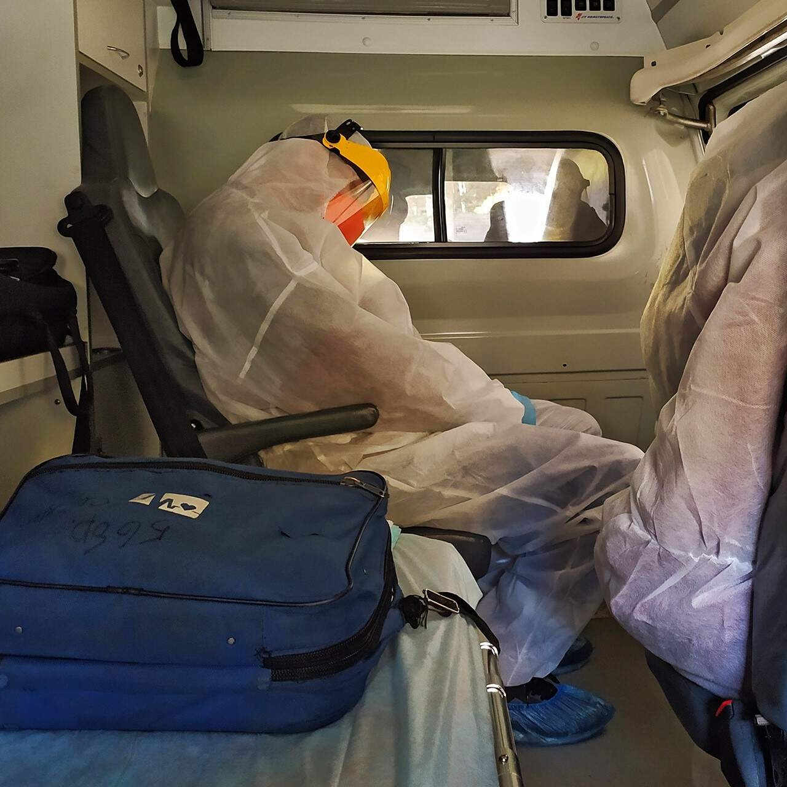

Rūkyti 30 metų ir mesti per 2 dienas. Vėžį nugalėjusio žmogaus patirtis.

Kaip viskas prasidėjo
Būdamas 18 metų aš pradėjau rūkyti. Tai atsitiko tarnaujant kariuomenėje. Rūkiau, nes buvo sudarytos visos sąlygos tam, kad pradėti rūkyti. Pirmiausia cigarečių buvo išdalinta nemokamai po 25 pakelius per mėnesį. Antra, tarp dalinio kariškių nebuvo nerūkančių. Tada skaitėsi, kad nerūkantis seržantas – nesąmonė.
Po kariuomenės savo gyvenimą susiejau su medicina. Ugdymo procesas pareikalavo daug nervų ir jėgų. Atskirai verta paminėti pasirengimo egzaminams laikotarpius. Tai buvo bemiegės naktys, permirkusios nikotino. Neseniai naršiau internete ir pamačiau nuotrauką. Tai buvo tarsi šiukšliadėžė, prie kurios visą laiką rūkėme, kai buvome studentais.
Mano priklausomybės nuo nikotino pikas atėjo, kai tapau chirurgu. Mano gyvenime cigarečių atsirado dar daugiau. Budėdamas surūkydavau po 2 pakelius per dieną. Operacijos, kurios galėjo trukti valandas, privertė mane jaustis, kad cigaretė, tai kaip atlygis. Ypač tos, kurios truko 12 ar daugiau valandų. Nikotinas man buvo vos ne gyvenimo prasmė.
Ir taip metai bėgo. Mano žmona dažnai bandė padėti man atsikratyti šio blogo įpročio, bet nesėkmingai. Ji niekaip negalėjo padaryti įtakos man. Niekas negalėjo. Niekada neužsiėmiau saviapgaule ir puikiai supratau, kad mano stipriai pageltę dantys, niūrus kvapas, nuolatinis pilvo skausmas – visa tai yra cigaretės nuopelnas. Sąmoningai ėjau į šį „sandarį su velniu“. Tačiau net negalėjau pagalvoti, kad tapsiu vienu iš tų, kurie dėl cigaretės atsidurs ant gyvybės ir mirties slenksčio. Kol to nepatiri pats, tu tiesiog atsisakai tuo patikėti.
Lemiamas momentas
2020 metų pradžioje susirgau koronavirusu. Virusas stipriai paveikė mano ir taip nesveiką kūną, ir aš atsidūriau reanimacijoje. Ten man buvo diagnozuotas dvigubas plaučių uždegimas. Aš pats negalėjau kvėpuoti, buvau prijungtas prie ventiliatoriaus. Paaiškėjo, kad plaučius paveikė 90 proc. Tačiau gyvenime esu optimistas ir nenustojau tikėti, kad susitvarkysiu su virusu. Taip ir atsitiko. Po dviejų savaičių ligoninėje pamažu jaučiausi geriau, pradėjau kvėpuoti savarankiškai, būklė stabilizavosi.
Gyvybę išgelbėjusi gydytoja neskubėjo džiaugtis. Prieš išleidžiant iš ligoninės mane dar kartą apžiūrėjo. Gydytojas pradėjo manęs klausinėti apie mano gyvenimo būdą, ir aš jam prisipažinau, kad visada daug rūkau. Nekantravau nusipirkti pakelį cigarečių ir vėl parūkyti. Bent pusę cigaretės.
- „Reikia nedelsiant mesti rūkyti, kartą ir visiems laikams“.
- "Daktare, aš padarysiu ilgą pertrauką, pažadu"
- "Bijau, kad mane neteisingai supratote. Jūs sergate plaučių vėžiu. Ir tam tikra prasme galiu vadinti jus laimikiu, nes radome jį labai ankstyvoje stadijoje. Jūsų limfmazgiai nepažeisti, metastazių nėra. Reikia skubiai operuoti. Bet ne ankščiau nei pries tris savaites, nes jūsų organizmas vis dar nusilpęs. Dabar svarbiausia nedelsiant mesti rūkyti. Kartoju kartą ir visiems laikams. Kitaip bijau, kad joks gydymas nepadės.
Aš netikėjau savo ausimis. Jis man pasakė, kad atsiradus naujam virusui, COVID-19 paveiktų lėtinių rūkalių atvejų labai padaugėjo. Ir jei nebūčiau rūkęs bent pastaruosius du mėnesius, galbūt to nebūtų nutikę.
Beveik apsipylęs ašaromis bandžiau jam paaiškinti, kad po 30 metų kasdienio „profesionalaus“ rūkymo staigiai mesti rūkyti neįmanoma! Net gresia mirtis! Tai turėjo būti gynybinė reakcija.
Tiesą sakant, nors pats esu gydytojas, niekada nesupratau šiuolaikinių nikotino priklausomybės gydymo metodų veiksmingumo. Bijojau ir nenorėjau įsivaizduoti savo gyvenimo be cigaretės.
- "Penktadienį vyks mokslinė konferencija. Bus kalbama apie vaistą, kuris jums tikrai padės. Būtinai turite ateiti." – tvirtino gydytojas.
Sulaukęs penktadienio, nuėjau į šią konferenciją... su cigarete burnoje. Nebegalėjau rūkyti kaip anksčiau, labai silpnai įkvėpiau, nuolat tuo pat metu kosėdamas.
Konferencijoje pokalbio su kolegomis sužinojau, kad pagrindinė diskusijų tema bus tam tikras . Sukūrė Belgijos mokslininkų komanda. Iš pradžių buvau labai skeptiškas. Maniau, kad tai bus koks nors kitas nikotino pakaitalas arba narkotikas, kuriame yra tiesiogiai nikotino, o tai iš tikrųjų neišsprendžia rūkančiojo problemos.
aš buvau neteisus
Tačiau pasirodė visiškai kitaip. Skirtingai nuo farmacijos produktų, yra purškalas nuo rūkymo be nikotino. Jį sudaro išskirtinai natūralūs ingredientai, tokie kaip gotu kola, ženšenis, cikorija. Vaisto paskirtis – tiesiogiai veikti žmogaus smegenis. pašalina nervinius ryšius, atsakingus už nikotino priklausomybės formavimąsi ir psichologinį ryšį su visomis rūkymo formomis. Jis pradeda veikti vidutiniškai antrą dieną nuo vaisto vartojimo pradžios, turi kumuliacinę savybę. Daugiau informacijos galite perskaityti gamintojo puslapyje.
Na, ant žodžių viskas skambėjo įdomiai, bet kaip išėjo iš tikrųjų?
Užsisakiau kelis pakelius sau, nelabai tikėdamasis išsigelbėjimo. Po poros dienų gavau vaistą ir pradėjau jį gerti. Tuo tarpu mano gydytojas jau paskyrė operacijos datą augliui pašalinti. Iki jos buvo like apie dvi savaites. Žinojau, kad man skubiai reikia kartą ir visiems laikams nutraukti savo priklausomybę.

Kaip aš pagaliau mečiau rūkyti su
2 diena: pabudau, papusryčiauju. Šiek tiek keisti pojūčiai kūne. Atrodė, kad kūnas nelabai prašė cigaretės, bet kvailas rūkymo ritualas pavalgius stipriai įstrigo į galvą. Negalėjau atsispirti -surūkiau. Tada visa diena truko be cigaretės. Vakare po vakarienės mano organizmas vėl pradėjo reikalauti tabako. Išėjau pasivaikščioti, prisidegiau cigaretę.
3–5 diena: valdyti savo kūną tapo lengviau. Ir nors kažkas viduje vis dar periodiškai siūlė parūkyti, aš sėkmingai atsisakiau.
6-11 diena: Noras rūkyti atsirado tik tada, kai, pavyzdžiui, pro mane praėjo žmogus su cigarete. Ir tada tai buvo kažkas impulsyvaus. Man buvo daug lengviau nuvyti mintis apie rūkymą. Šiomis dienomis stengiausi atsiriboti nuo rūkalių.
12 diena: operacija. Navikas buvo sėkmingai pašalintas.
13-17 diena: atsigavimas po operacijos. Slaugytoja man davė kartu su kitais vaistais. Potraukio cigaretėms nejaučiau.
18 diena: išrašytas iš ligoninės. Grįžo namo. Ir toliau vartojamas vienas kartu su kitais vaistais.
19-21 diena: Visiškai jokio noro rūkyti! Kai rūšiavau dokumentus po namus, atidariau stalčių, kuriame visada turėjau cigarečių. Paėmiau pakuotę, pasukau rankoje ir padėjau atgal. Pergalė!
22-40 diena: vis dar vartodavau . Norėjau visam laikui atsikratyti savo baisaus įpročio.
Naujas gyvenimas
Praėjo daugiau nei dveji metai, kai mečiau rūkyti dėka ir nugalėjau vėžį. Ačiū gydytojau, kuris ne tik išgelbėjo mano gyvybę, bet ir pagerino jos kokybę! Ir nors dalis plaučių buvo pašalinta, dabar kvėpuoju taip, lyg man vėl būtų 18 metų! Ėmiau geriau užuosti gerus kvapus, o žmona pagiria, kad mano oda sveikesnė. Šlykštus kvapas iš burnos yra praeitis. Pagerėjo seksualinio gyvenimo ir miego kokybė. Aš jaučiuosi puikiai!
Kai mečiau rūkyti, mano kasdienės išlaidos labai sumažėjo. Dabar kartą per metus už pinigus, kuriuos išleisdavau cigaretėms, su žmona keliaujame! Siunčiu Jums mūsų nuotrauką iš Tailando!
Jei jūs, kaip ir aš, bandote mesti rūkyti arba galvojate apie tai, kad laikas mesti rūkyti, dabar pats laikas! Ne rytoj, ne po savaitės ar mėnesio, o dabar! padės jums atsikratyti šio blogo įpročio, kaip ir man padėjo, pažadu.
DĖMESIO: Akcijos metu iš platintojo „“ galima įsigyti su nuolaida iki 50%. Norėdami tai padaryti, turite atidaryti dėžutę su nuolaida, užpildyti žemiau esančią užsakymo formą, iki (imtinai). Reklaminių prekių skaičius ribotas. Turėsite tik du bandymus!

Birutė Burokaitė
Ar tikrai kažkas nežinojo apie ?
Kotryna Tadienė
Manau, kad daugeliui tai taps naujiena, kad JAV išrašo gydytojai - paskyria kaip vaistą. Tikiuosi, kad netrukus pradėsime į tai žiūrėti rimčiau.
Audronė Šaltikienė
Aš pati su mečiau rūkyti. Nikotino gumų, pleistrų ir purškiklių fone tai yra tiesiog dangus ir žemė! Kaip mečiau prieš 7 mėnesius, tai iki šiol neberūkau, net nesinori
Andrius Bitautas
Ar jis tikrai taip padeda? Aš nenoriu vėl eikvoti pinigų
Jonas Petraitis
Klausykit, mano nuomone, tai yra pati kompetentingiausia finansinė investicija gyvenime
Kęstutis Vandeninis
Taupymas yra gerai. Taip pat galite sutaupyti ir automobiliui. Ar greitai padeda?
Mykolas Burgauskas
Aš rūkiau gal nuo 7 metų. Maniau, kad galiu bet kada mesti. Bet, matyt, nelabai norėjau. Ir net kai buvo pakenkta mano sveikatai (buvo įtarimas dėl onkologijos), negalėjau mesti. Ačiū žmonai, ji panorėjo padėti, kitaip būčiau miręs su cigarete burnoje. Ji man nusipirko šitą ir privertė jį vartoti. Nesitikėjau jokio stebuklo, bet nusprendžiau išbandyti. Bet taip pasirodė - kvailai pradėjo pamiršti apie cigaretes. Taigi kartą pamiršau nusipirkti pakelį ir nusprendžiau nepirkti. O dabar nerūkau jau pusantro metų.
Marija Žvirbliutė
Liaudi, koks nuostabus jausmas, neperteiksiu žodžiais! Kiek gyvenimo praleidau veltui šiai prakeiktai priklausomybei! Dvokė plaukai, drabužiai, rankos... pačiai buvo šlykštu, bet negalėjau mesti. Šlovė didiesiems gydytojams, kurie sukūrė !!
Eugenijus Bagdonas
Kas vartojo , kaip greit padeda?
Kęstutis Baltušis
Visiem skirtingai, priklausomai nuo stažo ir individualios priklausomybės. Mano draugai ir aš eksperimentavome. Aš mečiau po savaitės, kitu du metė po 10 dienų. Tiktai vienas beveik mėnesį vartojo . Tiesa, jis turėjo 35 metų stažą.
Aleksas Lapynas
Dabar užsisakiau porą pakuočių bandymui, tikiuosi, kad padės. Beje, šiandien yra paskutinė akcijos diena. Nuo rytojaus kainos padidės.
Deivydas Erelis
Paspėjau!!! Laukiu siuntinio, pažadėjo, kad greitai ateis. Galiausiai mesiu rūkyti ir pradėsiu taupyti pinigus Tailandui))))